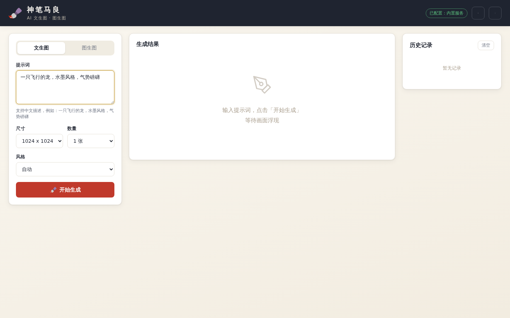
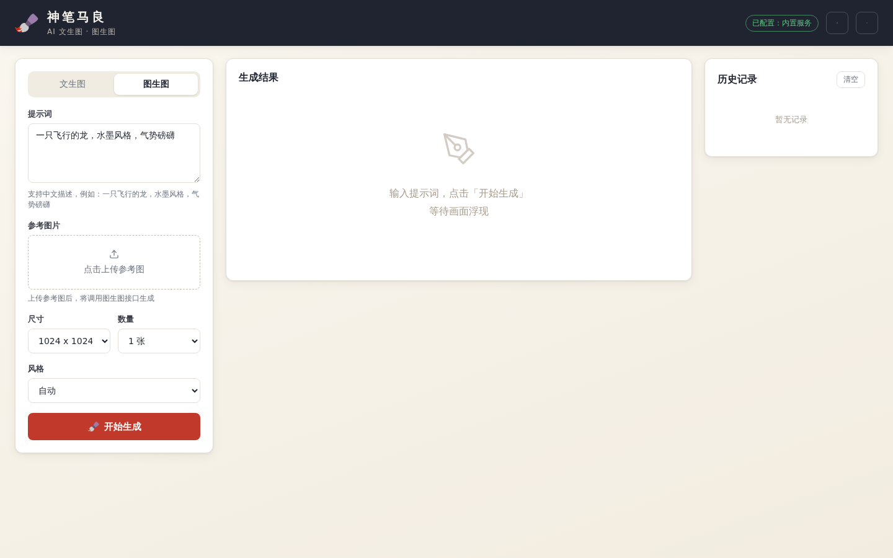
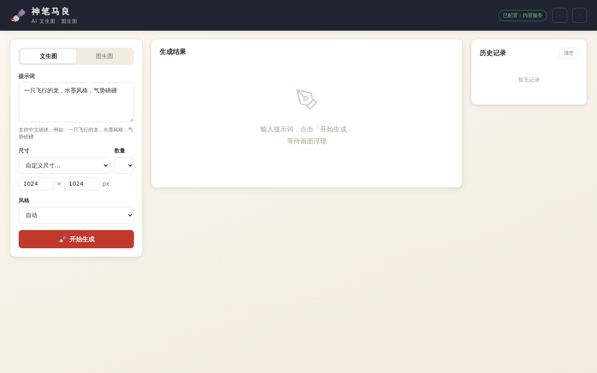
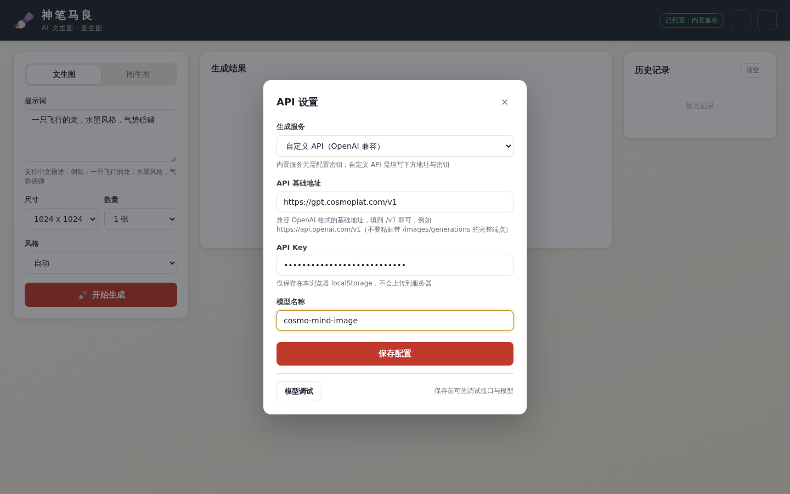
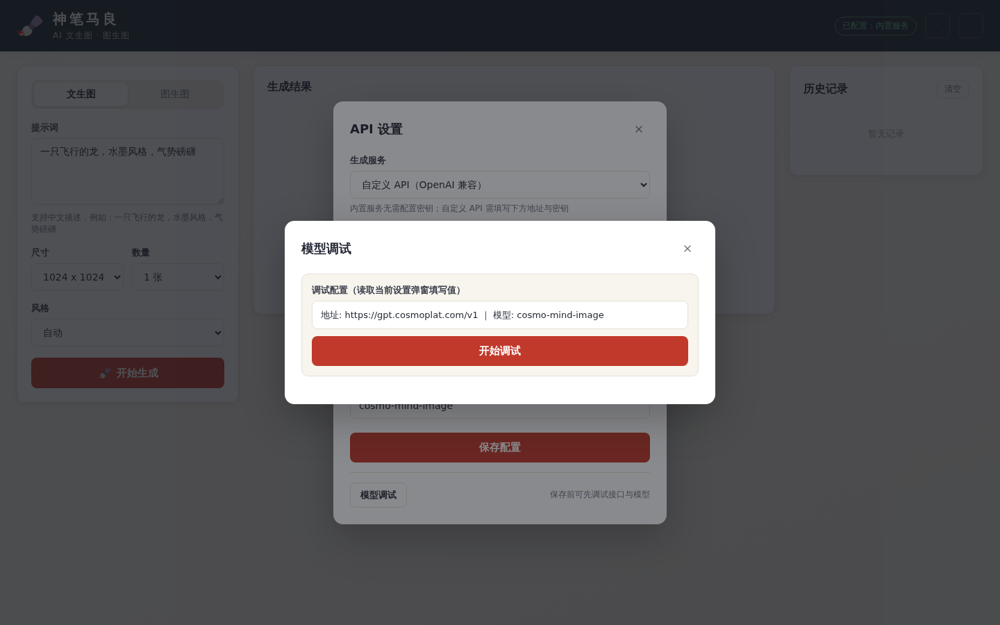
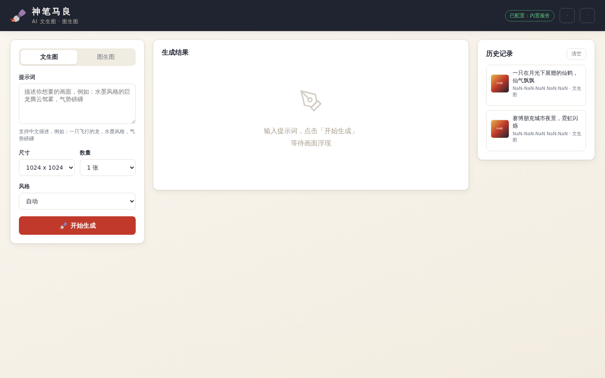

快速上手
神笔马良是一款 AI 文生图工具：输入一句话描述，即可自动生成对应画面的图片，也支持基于参考图生成相似风格的新图。
第一步：在左侧输入框中输入画面描述（支持中文），例如「一只飞行的龙，水墨风格，气势磅礴」。
第二步：选择风格、尺寸与数量。
第三步：点击「开始生成」，等待毛笔作画动画结束，结果会显示在右侧。

生成图片
生成面板位于页面左侧，包含模式、提示词、风格、尺寸与数量等选项。
选择生成模式
页面顶部提供两种模式：
- 文生图：仅凭文字描述生成新图。
- 图生图：上传一张参考图，基于参考图内容与提示词生成新图。该模式需要切换至「自定义 API」数据源。

输入提示词
- 支持中文或英文，建议描述主体、环境、风格与氛围，如「一只在月光下展翅的仙鹤，仙气飘飘」。
- 使用自定义 API 生成时，中文提示词会自动翻译为英文并附加风格描述，以获得更好的效果。
选择风格
内置 20 种风格，如水墨、国风、赛博朋克、油画、浮世绘等。风格会影响画面的整体气质，选择「不指定」则由模型自由发挥。
设置尺寸
预设尺寸
下拉框中提供多种常用比例，标签中已注明宽高比：
- 常规：1:1、3:2、2:3、7:4 等
- 电脑屏幕：16:9、16:10、4:3
- 手机屏幕：9:16、9:19.5、3:4
自定义尺寸
选择「自定义尺寸…」后输入宽和高（64-2048 像素之间）。内置服务仅支持固定尺寸，自定义尺寸会按比例自动匹配最接近的预设；自定义 API 模式支持任意尺寸精确生成。

设置数量
单次可生成 1-3 张。数量越多耗时越长，建议按需选择。
切换自定义 API
使用内置服务开箱即用；如需图生图、任意尺寸或更好的生成效果，可切换至自定义 API。
配置步骤
- 点击页面右上角「设置」按钮。
- 数据源选择「自定义 API」。
- 填写 API 基础地址（如
https://api.example.com/v1）、API Key 与模型名称。 - 点击「保存配置」。

API 基础地址兼容 OpenA兼容接口，支持
/images/generations（文生图）与/images/edits（图生图）。
校验配置
配置不确定是否正确时，可在设置弹窗底部点击「模型调试」，检测接口连通性、查看模型列表，并实际生成一张测试图验证。

管理历史记录
成功生成的图片会自动保存到浏览器本地（最多保留 50 条），刷新页面不会丢失。
- 预览：点击历史缩略图可放大查看。
- 下载：放大预览后点击「下载」保存图片。
- 清空：点击「清空历史」可删除全部记录。

常见问题
生成耗时多久？
耗时与模型及尺寸强相关：小尺寸（256x256）约 5 秒，中尺寸（512）约 10-30 秒，大尺寸（1024）约 80-130 秒。多个任务会排队串行执行，请耐心等待。
内置服务为什么不能图生图？
内置图像服务暂未开放图生图能力，请切换至「自定义 API」模式后使用。
生成失败或图片显示异常怎么办？
- 提示「生成失败」：请检查网络与接口配置，自定义 API 模式请确认地址、密钥正确且服务可达。
- 图片裂图：确认接口支持
b64_json返回格式；部分网关会返回服务器本地路径，系统会自动抓取转换。
如何提升生成效果？
提示词越具体越好（包含主体、环境、光线、风格）；自定义 API 模式下建议搭配风格选项，中文提示词会自动增强。